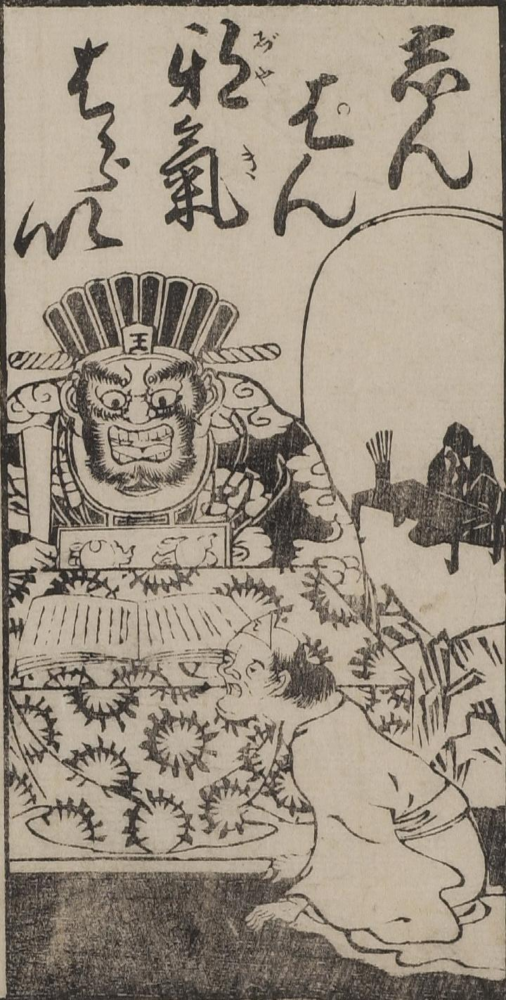

← 图鉴索引

閻魔大王が死者を審議している様子が描かれている。
出典：親書誌：U426_nichibunken_0042：しんぱん邪氣はらい；シンパンジャキハライ／日付：2006／資源識別子：U426_nichibunken_0042_0001_0000
Copyright (c)2010- International Research Center for Japanese Studies, Kyoto, Japan. All rights reserved.